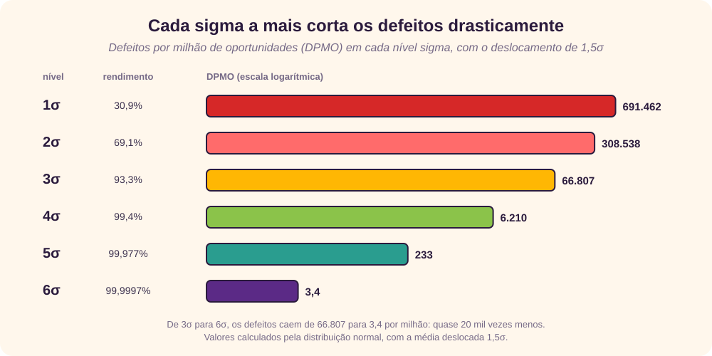
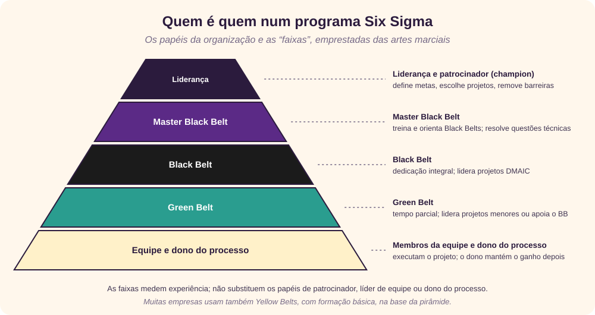
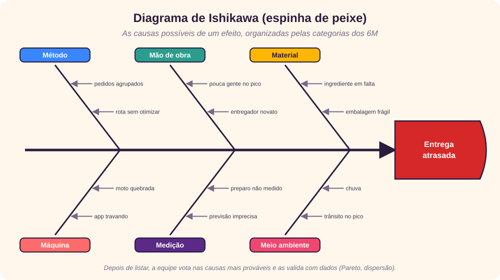
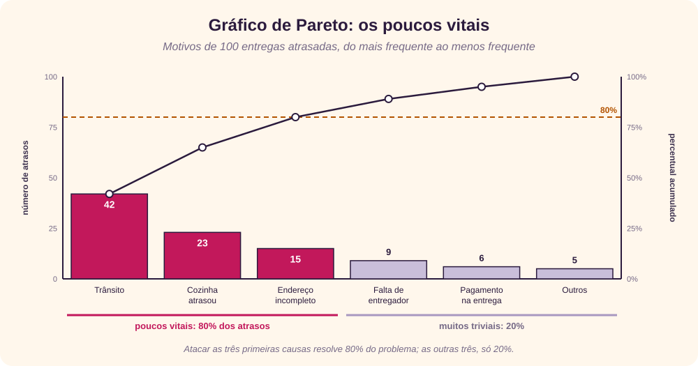

O que é Six Sigma
Six Sigma é um método disciplinado, orientado por dados, para melhorar processos e entregar produtos e serviços quase sem defeitos. [1] [2] Ele tem estas características:
- busca eliminar desperdício e ineficiência, e com isso aumentar a satisfação do cliente, entregando o que ele espera;
- segue uma metodologia estruturada, com papéis definidos para os participantes;
- depende de dados: exige coleta precisa de dados dos processos analisados;
- busca resultados que apareçam nos demonstrativos financeiros;
- atua em várias frentes: melhorar processos, reduzir defeitos, reduzir a variação, cortar custos, aumentar a satisfação do cliente e os lucros.
A palavra sigma (σ) é o símbolo estatístico do desvio-padrão, que mede o quanto um processo varia em torno da média. A ideia central é simples: se você consegue medir quantos defeitos um processo tem, consegue descobrir de forma sistemática como eliminá-los e chegar perto do “zero defeito”. No nível seis sigma, isso significa 3,4 defeitos por milhão de oportunidades, ou 99,99966% de acerto. [3]
Conceitos-chave
| Conceito | O que significa |
|---|---|
| Crítico para a qualidade (CTQ) | Os atributos mais importantes para o cliente. [12] |
| Defeito | Deixar de entregar o que o cliente quer. |
| Capacidade do processo | O que o processo consegue entregar. |
| Variação | O que o cliente vê e sente. |
| Operação estável | Processos consistentes e previsíveis, para melhorar o que o cliente vê e sente. |
| Projeto para Six Sigma (DFSS) | Projetar para atender às necessidades do cliente e à capacidade do processo. |
Os clientes sentem a variação, não a média.
Por isso o Six Sigma ataca primeiro a variação do processo e só depois melhora a sua capacidade. Uma entrega que leva 30 minutos em média, mas às vezes 10 e às vezes 60, irrita mais do que uma que leva sempre 35.
Por que “seis sigma”
Num processo com distribuição normal, o nome diz quantos desvios-padrão cabem entre a média e o limite de especificação mais próximo, definido pelo cliente. Em “seis sigma”, cabem seis. [3]
Um detalhe importante, que costuma ficar de fora: com o processo perfeitamente centrado, seis sigma dariam cerca de 2 defeitos por bilhão. Os famosos 3,4 por milhão vêm de uma convenção proposta por Mikel Harry: supõe-se que, no longo prazo, a média do processo se desloca até 1,5σ. Assim, um processo “seis sigma” no curto prazo se comporta como um processo de 4,5σ no longo prazo. [3] O valor de 1,5 é empírico e recebe críticas, mas é o usado nas tabelas de conversão.

Origem e história
- O Six Sigma foi introduzido pelo engenheiro Bill Smith na Motorola, em 1986, num esforço para reduzir drasticamente as falhas de produto. Smith morreu em 1993, antes de ver o alcance que o método teria. [3] [4]
- Em 1995, Jack Welch o tornou central na estratégia da General Electric, o que popularizou o método no mundo todo. [3]
- Ele se apoia em teorias anteriores de gestão da qualidade, como os 14 pontos de W. Edwards Deming e os passos para a qualidade de Joseph Juran. [7] [8]
- Em 2011, a ISO publicou a norma ISO 13053, que descreve o método DMAIC. [6]
- Hoje é comum a combinação com o Lean, chamada Lean Six Sigma: o Lean ataca o desperdício e o tempo; o Six Sigma, a variação e os defeitos. [23]
Mitos e benefícios
“Só serve para reduzir defeitos”
Realidade: também reduz custos e tempo de ciclo e aumenta a satisfação do cliente.
“É coisa de fábrica”
Realidade: vale para qualquer processo repetível, inclusive serviços, TI, finanças e saúde.
“Não se aplica à engenharia”
Realidade: o DFSS existe justamente para projetar produtos e processos.
“Exige estatística difícil”
Realidade: a maioria das ferramentas é simples, como Pareto, Ishikawa e histograma.
“É só treinamento”
Realidade: treinamento sem projetos reais e sem apoio da liderança não gera resultado.
Os seis principais benefícios que atraem as empresas são: [5]
- gera sucesso sustentado;
- define uma meta de desempenho para todos;
- aumenta o valor entregue ao cliente;
- acelera o ritmo de melhoria;
- promove aprendizado e troca de conhecimento entre áreas;
- executa mudanças estratégicas.
Clientes, processos e pessoas
A melhoria de processos no Six Sigma se apoia em três elementos:
- Clientes: são eles que definem a qualidade. Esperam desempenho, confiabilidade, preço competitivo, entrega no prazo, bom atendimento e transações claras e corretas.
- Processos: defini-los, junto com as suas métricas, é o centro do método. A qualidade deve ser vista pelo lado do cliente, de fora para dentro: entendendo o ciclo da transação do ponto de vista dele, descobrimos o que ele vê e sente e onde estão os pontos fracos.
- Pessoas: toda a empresa precisa participar, com oportunidades e incentivos para usar os seus talentos em favor do cliente. Cada membro da equipe deve ter um papel bem definido, com objetivos mensuráveis.
Papéis e faixas
Num programa Six Sigma, cada pessoa recebe um papel específico. Essa estrutura é o que permite levar o método a toda a organização.

Os papéis
| Papel | Responsabilidades |
|---|---|
| Liderança (conselho) | Define o propósito do programa, explica como o resultado beneficia o cliente, fixa cronograma e prazos, cria formas de acompanhamento e apoia a equipe. |
| Patrocinador (champion) | Executivo que entende o método e está comprometido com o sucesso; dono dos processos e sistemas, ajuda a iniciar e coordenar as melhorias na sua área e resolve problemas do projeto. |
| Líder de implantação | Supervisiona o esforço da equipe, garante o plano de implantação, resolve problemas, organiza treinamentos e ajuda o patrocinador a motivar o time. |
| Coach | Especialista ou consultor que faz a ponte entre patrocinador e liderança, organiza o trabalho, define os resultados esperados e media conflitos e resistências. |
| Líder de equipe | Supervisiona o trabalho do time, define metas com o patrocinador, escolhe membros e recursos e mantém o projeto no prazo. |
| Membro da equipe | Executa tarefas específicas do projeto, com prazos, junto com os demais. |
| Dono do processo | Assume o processo depois que a equipe termina, para manter o ganho. |
As faixas
As cores de faixa vêm das artes marciais e indicam nível de experiência. Elas não substituem os papéis acima.
- Master Black Belt: não é membro direto da equipe; orienta a liderança e os Black Belts, responde a dúvidas de método e resolve questões técnicas.
- Black Belt: passou por treinamento completo e tem experiência em vários projetos; com dedicação integral, costuma ser o líder da equipe.
- Green Belt: menos experiente que o Black Belt e em tempo parcial; pode liderar projetos menores ou trabalhar junto ao líder da equipe.
Como começar
O Six Sigma é para você?
Antes de adotar o método, vale uma avaliação honesta de prontidão:
- a estratégia da empresa está clara, e a visão de futuro é bem comunicada?
- a organização responde bem a novas circunstâncias?
- quão bem ela atende aos requisitos dos clientes e gerencia os processos que cruzam áreas?
- outras iniciativas de mudança vão competir com o Six Sigma ou apoiá-lo?
- existe um caso de retorno sólido? O Six Sigma exige investimento; sem retorno claro, é melhor não começar;
- se já existe um programa de melhoria forte e eficaz, por que trocar?
Custos
Os principais itens do orçamento são: salários de quem se dedica em tempo integral; o tempo de executivos, equipes e donos de processo em coleta de dados e medições; treinamento e consultoria; e o custo de implantar as melhorias.
Primeiros passos
- Trace o seu caminho: o melhor é o que funciona para a sua organização.
- Defina o objetivo e as prioridades.
- Fique no que é viável com a sua influência, recursos e escopo.
- Prepare os líderes que vão lançar e guiar o esforço.
- Monte a organização Six Sigma: forme Black Belts e os demais papéis.
- Treine a organização toda, não só os Black Belts.
- Faça um piloto antes de expandir.
Escolha dos projetos
Escolher o problema certo é um dos maiores desafios. Há duas abordagens:
- De cima para baixo: ligada à estratégia e às necessidades dos clientes. O risco é o escopo ficar grande demais para caber nos 3 a 6 meses típicos de um projeto.
- De baixo para cima: os Black Belts escolhem projetos adequados à capacidade das equipes. O risco é o projeto não estar ligado à estratégia e receber pouco apoio da direção.
DMAIC, DMADV e DFSS
| Metodologia | Quando usar | Fases |
|---|---|---|
| DMAIC | Melhorar um processo que já existe. | Definir → Medir → Analisar → Melhorar (Improve) → Controlar |
| DMADV | Criar um produto ou processo novo, previsível e sem defeitos. | Definir → Medir → Analisar → Projetar (Design) → Verificar |
| DFSS | Projetar ou reprojetar do zero para atingir qualidade seis sigma. | Variantes como DMADV e IDOV (Identificar → Projetar → Otimizar → Verificar) |
Às vezes um projeto DMAIC vira DFSS, quando se descobre que o processo precisa ser totalmente redesenhado para chegar à melhoria desejada. [9] [10]
Nas fases do DMADV: definir o problema ou objetivo; medir e determinar as necessidades e especificações do cliente; analisar o processo para atendê-las; projetar um processo que as cumpra; e verificar o desempenho do projeto. No DFSS, a fase de otimizar determina a capacidade do processo e ajusta o projeto antes da verificação.
DMAIC passo a passo
![Cinco colunas ligadas por setas, uma por fase do DMAIC. Definir: qual é o problema e para quem, com termo de abertura, SIPOC, árvore CTQ e voz do cliente. Medir: quão grande ele é, com plano de coleta, DPMO, FMEA e capacidade. Analisar: qual a causa raiz, com Ishikawa, 5 porquês, Pareto e dispersão. Melhorar: como eliminar a causa, com diagrama de afinidade, matriz de critérios, piloto e poka-yoke. Controlar: como manter o ganho, com carta de controle, padronização, plano de resposta e dono do processo. Uma seta tracejada volta de Controlar para Definir.](rc_images/SixSigmaDMAIC.svg)
D: Definir
Quatro tarefas principais:
- Formar a equipe: quem participa e com qual papel. Se o projeto envolve muitos departamentos, é melhor quebrá-lo em projetos menores.
- Documentar os clientes e os processos: todo projeto tem clientes, que recebem o produto ou serviço do processo. Cada cliente tem necessidades, e cada necessidade tem requisitos, as características que determinam se ele fica satisfeito.
- Escrever o termo de abertura (project charter): nome do projeto, caso de negócio, escopo, metas, marcos, requisitos e premissas especiais e papéis da equipe.
- Desenhar o SIPOC: o mapa de alto nível com fornecedores, entradas, processo, saídas e clientes. [11]
Ao fim da fase, você deve saber quem é o cliente, quais são os seus requisitos e resistências, e ter clareza sobre metas, escopo, orçamento e prazos.
M: Medir
Mede-se o desempenho atual do processo, em três partes:
- Plano e coleta de dados: que dados coletar e de onde. As fontes são as entradas, o processo (tempo, custo, valor, defeitos, trabalho) e as saídas.
- Avaliação dos dados: calcula-se o número de defeitos por milhão de oportunidades (DPMO) e, com ele, o nível sigma. Um defeito é qualquer coisa fora da especificação do cliente; uma oportunidade é cada chance de ocorrer um defeito.
- FMEA (análise de modos de falha e efeitos): prevenir defeitos antes que aconteçam.
número de defeitos
DPMO = ─────────────────────────────────────── × 1.000.000
número de unidades × oportunidades por unidade
Exemplo: a equipe do serviço de entrega examina 50 entregas, cada uma com 3 oportunidades de defeito, e encontra 13 atrasos, 3 pedidos errados e nenhuma comida fria:
13 + 3
DPMO = ──────── × 1.000.000 = 106.667 → cerca de 2,7σ
50 × 3
Pela tabela de conversão, 106.667 DPMO fica entre 2,7σ e 2,8σ (o valor exato é 2,74σ). Esse é o ponto de partida, a linha de base contra a qual a melhoria será medida.
FMEA: para cada modo de falha possível, dão-se notas de 1 a 10 para a severidade (S), a ocorrência (O) e a detecção (D; quanto mais difícil de detectar, maior a nota). O produto é o número de prioridade de risco, RPN = S × O × D, de 1 a 1.000; os maiores recebem ações primeiro. O manual AIAG-VDA de 2019 recomenda trocar o RPN por uma tabela de prioridade de ação (AP), que dá mais peso à severidade. [13]
A: Analisar
O objetivo é achar a causa dos defeitos. Há cinco tipos de análise:
- Da origem (causa raiz): em três passos: abrir (a equipe levanta todas as explicações possíveis), estreitar (reduz a lista) e fechar (valida com dados as que sobraram).
- Do processo: um mapa de processo mais detalhado mostra onde estão as maiores ineficiências, comparando com o que é possível e com a concorrência.
- Dos dados: padrões e tendências nos dados que confirmem ou descartem causas. Os próprios dados podem ter defeitos.
- Dos recursos: treinamento insuficiente ou falta de insumos também causam defeitos.
- Da comunicação: quase todo processo com muitos defeitos tem problemas de comunicação, com clientes externos e internos.

O diagrama de Ishikawa organiza as causas possíveis por categorias, e os 5 porquês aprofundam cada uma: pergunta-se “por quê?” até chegar à causa raiz. [14] [15] Por exemplo: a entrega atrasou → por quê? A comida saiu tarde → por quê? A cozinha recebeu vários pedidos juntos → por quê? O aplicativo libera os pedidos em lotes → por quê? A configuração padrão nunca foi revista.
I: Melhorar
Se a análise da causa raiz foi bem feita, esta fase pode ser rápida. Os objetivos são:
- gerar ideias de solução que eliminem as causas raiz;
- definir critérios para avaliar as soluções, priorizá-las e testar a viabilidade das melhores;
- desenhar o estado futuro e estimar o novo nível sigma;
- fazer a análise de custo e benefício e um plano de implantação preliminar;
- testar a solução em escala reduzida (piloto) e, quando possível, tornar o erro impossível com um poka-yoke, um dispositivo à prova de erro. [21]
C: Controlar
Garante que o processo continue funcionando bem depois do projeto. Quatro aspectos:
- Controle da qualidade: acompanhar se o padrão é atingido, detectar problemas e corrigi-los.
- Padronização: a maior parte do trabalho deve seguir o procedimento padrão.
- Métodos de controle e alternativas: procedimentos para controlar o fluxo e alternativas para quando o processo não puder seguir o padrão.
- Resposta aos defeitos: vigiar os pontos fracos e ter um plano de resposta pronto para quando um defeito aparecer.
A carta de controle é a principal ferramenta desta fase. Os limites ficam, em geral, a três desvios-padrão da média. Pontos dentro deles mostram variação de causa comum, inerente ao processo, que só se reduz mudando o processo; um ponto fora mostra uma causa especial, um evento incomum que deve ser investigado. [19] [24]
As dez ferramentas técnicas
Estas são as ferramentas que todo membro de equipe Six Sigma deve dominar, na ordem em que aparecem no DMAIC. A maioria é fácil de aprender.
- Árvore CTQ: parte do cliente, identifica a sua necessidade e a desdobra em requisitos mensuráveis. [12]
- Mapa de processo: retrato dos passos atuais, começando pelo SIPOC.
- Histograma: mostra a distribuição de dados contínuos, como tempo e peso.
- Gráfico de Pareto: para dados discretos (sim ou não, com ou sem defeito), conta as ocorrências por motivo e as ordena da maior para a menor.
- Planilha-resumo do processo: indica quais passos agregam valor e quais não agregam.
- Diagrama de causa e efeito (Ishikawa): reúne as ideias da equipe sobre as causas raiz.
- Diagrama de dispersão: valida com dados uma suspeita de causa, cruzando-a com o resultado que se quer melhorar.
- Diagrama de afinidade: organiza muitas ideias em grupos: cada pessoa escreve uma ideia por post-it, a equipe agrupa as semelhantes e dá um título a cada grupo.
- Gráfico de sequência: se o histograma e o Pareto são fotografias, o gráfico de sequência é um filme: acompanha uma medida ao longo do tempo.
- Carta de controle: um gráfico de sequência com limites de controle calculados a partir dos dados.
O princípio de Pareto
O economista italiano Vilfredo Pareto observou, no fim do século XIX, que cerca de 80% da riqueza estava nas mãos de 20% da população. Joseph Juran generalizou a ideia para a qualidade: poucas causas (“os poucos vitais”) respondem pela maior parte dos problemas. [16] [17]

Capacidade do processo: Cp e Cpk
A capacidade compara a variação do processo com a tolerância do cliente. [18] [20]
Cp = (LSE − LIE) / 6σ Cpk = mín(LSE − μ, μ − LIE) / 3σ
O Cp diz se o processo caberia na especificação; o Cpk diz se ele cabe de fato, considerando onde está a média. Um processo seis sigma centrado tem Cp = 2,0; com o deslocamento de 1,5σ, o Cpk fica em 1,5.
Métricas de defeitos
Lembrando: um defeito é qualquer coisa fora da especificação do cliente, e uma oportunidade é cada chance de ocorrer um defeito. As fórmulas mais usadas:
| Métrica | Fórmula | No exemplo da entrega |
|---|---|---|
| Defeitos por unidade (DPU) | defeitos ÷ unidades | 16 ÷ 50 = 0,32 |
| Total de oportunidades (TO) | unidades × oportunidades por unidade | 50 × 3 = 150 |
| Defeitos por oportunidade (DPO) | defeitos ÷ TO | 16 ÷ 150 = 0,1067 |
| Defeitos por milhão de oportunidades (DPMO) | DPO × 1.000.000 | 106.667 |
| Rendimento acumulado (RTY) | produto dos rendimentos de cada etapa | 95% × 98% × 90% = 83,8% |
A probabilidade de encontrar um certo número de defeitos numa unidade, dado o DPU, pode ser estimada pela distribuição de Poisson. O rendimento acumulado mostra por que processos com muitas etapas sofrem: três etapas “boas” de 90% a 98% entregam, juntas, só 83,8% de unidades sem defeito.
Como achar o seu nível sigma
- defina com clareza os requisitos explícitos do cliente;
- conte os defeitos que ocorrem;
- calcule o rendimento, a porcentagem de itens sem defeito;
- use a tabela de conversão para achar o DPMO e o nível sigma.
| Nível sigma | Rendimento | DPMO |
|---|---|---|
| 1,0 | 30,85% | 691.462 |
| 1,5 | 50,00% | 500.000 |
| 2,0 | 69,15% | 308.538 |
| 2,5 | 84,13% | 158.655 |
| 3,0 | 93,32% | 66.807 |
| 3,5 | 97,73% | 22.750 |
| 4,0 | 99,379% | 6.210 |
| 4,5 | 99,865% | 1.350 |
| 5,0 | 99,977% | 233 |
| 5,5 | 99,9968% | 32 |
| 6,0 | 99,99966% | 3,4 |
Os valores foram calculados pela distribuição normal com o deslocamento de 1,5σ (DPMO = [1 − Φ(σ − 1,5)] × 1.000.000). Eles corrigem a tabela simplificada do texto original, que trazia 62,9% para 2σ e 320 DPMO para 5σ.
Glossário essencial
O texto original traz um glossário extenso, em boa parte ligado ao programa de uma empresa específica. Estes são os termos gerais mais úteis:
- Carta de controle
- Gráfico do desempenho ao longo do tempo, com média e limites de controle, que separa causas comuns de causas especiais.
- Causa comum
- Variação normal e cotidiana do processo; só se reduz mudando o processo.
- Causa especial
- Variação provocada por um evento incomum, fora da operação normal.
- Custo da má qualidade (COPQ)
- Impacto financeiro das falhas: retrabalho, refugo, inspeção, atrasos e outras atividades que não agregam valor.
- CTQ
- O que o cliente considera crítico para a qualidade, traduzido em requisitos mensuráveis.
- Dado contínuo × discreto
- Contínuo pode ser dividido infinitamente (tempo, peso, valor); discreto é contagem ou categoria (sim ou não, tipo de defeito).
- Defeituoso
- Unidade com um ou mais defeitos.
- Definição operacional
- Descrição precisa do que se mede e como, para que todos coletem dados do mesmo jeito.
- Dono do processo
- Responsável pelo processo depois do projeto.
- Estratificação
- Dividir os dados em grupos (turno, local, tipo) para localizar onde o problema acontece.
- Linha de base
- O desempenho antes da melhoria, a “foto do antes”.
- Mapa “como é” × “como deveria ser”
- O processo atual, com gargalos e retrabalho, e o processo melhorado, sem as etapas que não agregam valor.
- Modelo de Kano
- Classifica os atributos pela reação do cliente: básicos (causam insatisfação se faltam), de desempenho e de encantamento. [22]
- PDCA
- Planejar, Fazer, Verificar, Agir: o ciclo básico de melhoria contínua, também chamado de ciclo de Shewhart ou de Deming.
- Poka-yoke
- Termo japonês para “à prova de erro”: mecanismos que impedem o erro de acontecer.
- Repetibilidade e reprodutibilidade
- A mesma pessoa obtém o mesmo resultado ao repetir a medição; outras pessoas ou instrumentos obtêm o mesmo resultado.
- Tempo de ciclo
- Tempo para completar o processo do início ao fim, incluindo espera.
- Tollgate
- Revisão ao fim de cada fase para decidir se o projeto pode avançar.
- Voz do cliente (VOC)
- Coleta sistemática de requisitos, expectativas e insatisfações do cliente, por pesquisas, reclamações, entrevistas e grupos focais.
Revisão rápida
Tente responder antes de abrir cada pergunta.
1. O que significa “seis sigma” em números?
3,4 defeitos por milhão de oportunidades, considerando que a média do processo se desloca 1,5σ no longo prazo.
2. Por que o Six Sigma ataca primeiro a variação, e não a média?
Porque o cliente sente a variação: resultados imprevisíveis incomodam mais do que uma média um pouco pior, mas estável.
3. Quais são as fases do DMAIC e quando ele é usado?
Definir, Medir, Analisar, Melhorar e Controlar. É usado para melhorar um processo que já existe; para criar um novo, usa-se DMADV ou DFSS.
4. Uma equipe inspecionou 200 notas fiscais, cada uma com 5 oportunidades de erro, e achou 30 erros. Qual é o DPMO?
30 ÷ (200 × 5) × 1.000.000 = 30.000 DPMO, entre 3,3σ e 3,4σ.
5. Para que servem o SIPOC e o termo de abertura?
Na fase Definir: o SIPOC delimita o processo (fornecedores, entradas, processo, saídas, clientes); o termo de abertura registra o caso de negócio, o escopo, as metas e os papéis.
6. Como se calcula o RPN de um FMEA?
Severidade × Ocorrência × Detecção, cada uma de 1 a 10. Os modos de falha com maior RPN (ou maior prioridade de ação) são tratados primeiro.
7. Qual a diferença entre causa comum e causa especial numa carta de controle?
Causa comum é a variação normal, dentro dos limites; só se reduz mudando o processo. Causa especial é um evento incomum, que aparece fora dos limites ou em padrões anormais, e deve ser investigado.
8. Qual a diferença entre Black Belt e Green Belt?
O Black Belt tem treinamento completo, dedica-se em tempo integral e costuma liderar projetos DMAIC; o Green Belt atua em tempo parcial, em projetos menores ou apoiando o Black Belt.
Referências
- Giovani Perotto Mesquita, “Six Sigma”, GitHub Gist, texto original deste tutorial, gist.github.com/GiovaniPM/0730906e9665cbacff214e742738f058.
- Tutorialspoint, “Six Sigma Tutorial”, acesso em 25/09/2026, tutorialspoint.com/six_sigma.
- Wikipedia (em inglês), “Six Sigma”, acesso em 25/09/2026, en.wikipedia.org/wiki/Six_Sigma.
- Wikipedia (em inglês), “Bill Smith (Motorola engineer)”, acesso em 25/09/2026, en.wikipedia.org/wiki/Bill_Smith_(Motorola_engineer).
- Peter S. Pande, Robert P. Neuman e Roland R. Cavanagh, The Six Sigma Way, McGraw-Hill, 2000.
- ISO, ISO 13053-1:2011 — Quantitative methods in process improvement — Six Sigma — Part 1: DMAIC methodology, 2011.
- Wikipedia (em inglês), “W. Edwards Deming”, acesso em 25/09/2026, en.wikipedia.org/wiki/W._Edwards_Deming.
- Wikipedia (em inglês), “Joseph M. Juran”, acesso em 25/09/2026, en.wikipedia.org/wiki/Joseph_M._Juran.
- Wikipedia (em inglês), “DMAIC”, acesso em 25/09/2026, en.wikipedia.org/wiki/DMAIC.
- Wikipedia (em inglês), “Design for Six Sigma”, acesso em 25/09/2026, en.wikipedia.org/wiki/Design_for_Six_Sigma.
- Wikipedia (em inglês), “SIPOC”, acesso em 25/09/2026, en.wikipedia.org/wiki/SIPOC.
- Wikipedia (em inglês), “Critical to quality”, acesso em 25/09/2026, en.wikipedia.org/wiki/Critical_to_quality.
- Wikipedia (em inglês), “Failure mode and effects analysis”, acesso em 25/09/2026, en.wikipedia.org/wiki/Failure_mode_and_effects_analysis.
- Wikipedia (em inglês), “Ishikawa diagram”, acesso em 25/09/2026, en.wikipedia.org/wiki/Ishikawa_diagram.
- Wikipedia (em inglês), “Five whys”, acesso em 25/09/2026, en.wikipedia.org/wiki/Five_whys.
- Wikipedia (em inglês), “Pareto principle”, acesso em 25/09/2026, en.wikipedia.org/wiki/Pareto_principle.
- Wikipedia (em inglês), “Pareto chart”, acesso em 25/09/2026, en.wikipedia.org/wiki/Pareto_chart.
- NIST/SEMATECH, e-Handbook of Statistical Methods, “What is Process Capability?”, itl.nist.gov/div898/handbook/pmc/section1/pmc16.htm.
- NIST/SEMATECH, e-Handbook of Statistical Methods, “What are Variables Control Charts?”, itl.nist.gov/div898/handbook/pmc/section3/pmc32.htm.
- Wikipedia (em inglês), “Process capability index”, acesso em 25/09/2026, en.wikipedia.org/wiki/Process_capability_index.
- Wikipedia (em inglês), “Poka-yoke”, acesso em 25/09/2026, en.wikipedia.org/wiki/Poka-yoke.
- Wikipedia (em inglês), “Kano model”, acesso em 25/09/2026, en.wikipedia.org/wiki/Kano_model.
- Wikipedia (em inglês), “Lean Six Sigma”, acesso em 25/09/2026, en.wikipedia.org/wiki/Lean_Six_Sigma.
- Wikipedia (em inglês), “Control chart”, acesso em 25/09/2026, en.wikipedia.org/wiki/Control_chart.
![Five columns linked by arrows, one per DMAIC phase. Define: what is the problem and for whom, with project charter, SIPOC, CTQ tree and voice of the customer. Measure: how big is it, with data collection plan, DPMO, FMEA and capability. Analyze: what is the root cause, with Ishikawa, 5 whys, Pareto and scatter diagram. Improve: how to remove the cause, with affinity diagram, criteria matrix, pilot and poka-yoke. Control: how to keep the gain, with control chart, standardization, response plan and process owner. A dashed arrow goes back from Control to Define.](rc_images/SixSigmaDMAIC-en.svg)
![Cinque colonne collegate da frecce, una per fase del DMAIC. Definire: qual è il problema e per chi, con project charter, SIPOC, albero CTQ e voce del cliente. Misurare: quanto è grande, con piano di raccolta, DPMO, FMEA e capacità. Analizzare: qual è la causa radice, con Ishikawa, 5 perché, Pareto e dispersione. Migliorare: come eliminare la causa, con diagramma di affinità, matrice di criteri, pilota e poka-yoke. Controllare: come mantenere il risultato, con carta di controllo, standardizzazione, piano di risposta e owner del processo. Una freccia tratteggiata torna da Controllare a Definire.](rc_images/SixSigmaDMAIC-it.svg)